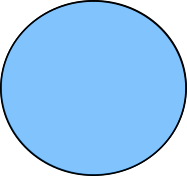

Toggle navigation
Toggle sidebar
Organising Committee
General Chairs
Tina Du, University of South Australia
Mehwish Nasim, Flinders University
Program Chairs
Joel Mackenzie, The University of Queensland
Maciek Rybinski, Data61